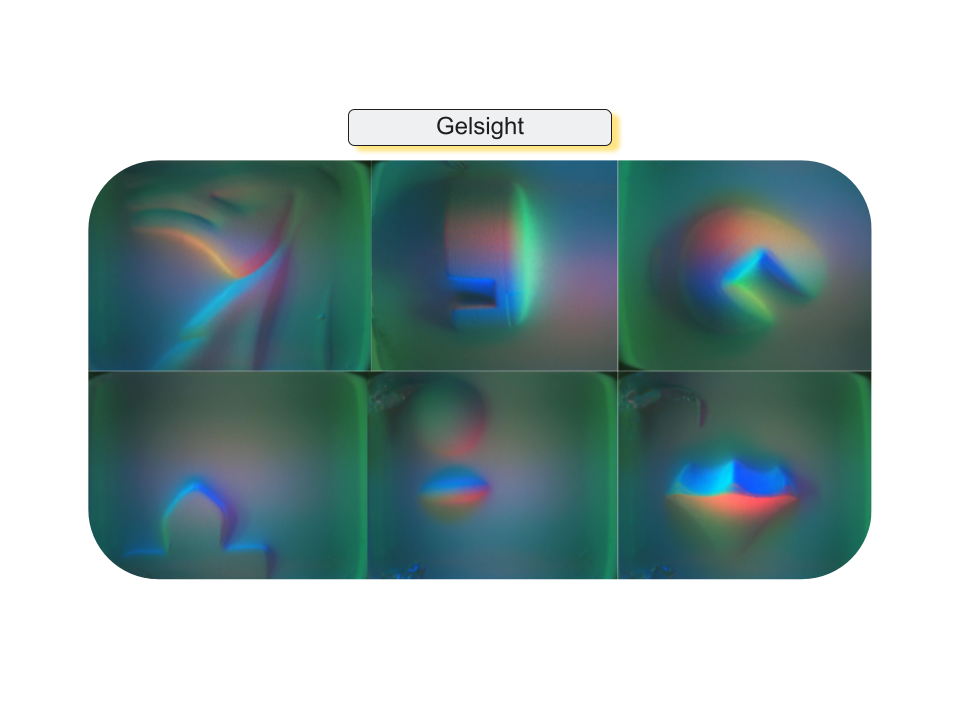

Tactile images from Gelsight sensors.
-->

We explore tactile perception for robotic manipulation in simulation (Tacto) and real life (UR5e). We leverage the high spatial resolution of the GelSight sensor by capturing tactile images of chess pieces for a classification and board placement task.
@misc{bauza2022tac2pose,
title={Tac2Pose: Tactile Object Pose Estimation from the First Touch},
author={Maria Bauza and Antonia Bronars and Alberto Rodriguez},
year={2022},
eprint={2204.11701},
archivePrefix={arXiv},
primaryClass={cs.CV}
}
@article{Wang_2022,
doi = {10.1109/lra.2022.3146945},
url = {https://doi.org/10.1109%2Flra.2022.3146945},
year = 2022,
month = {apr},
publisher = {Institute of Electrical and Electronics Engineers ({IEEE})},
volume = {7},
number = {2},
pages = {3930--3937},
author = {Shaoxiong Wang and Mike Lambeta and Po-Wei Chou and Roberto Calandra},
title = {{TACTO}: A Fast, Flexible, and Open-Source Simulator for High-Resolution Vision-Based Tactile Sensors},
journal = {{IEEE} Robotics and Automation Letters}
}